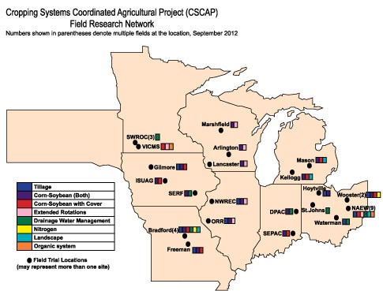

Baseline Monitoring and Experimental Trials
Our multi-state team developed standardized methodologies and is performing baseline monitoring of carbon, nitrogen and water footprints at agricultural test sites across the Midwest. This work is key in evaluating how various crop management practices impact carbon, nitrogen and water footprints at test sites.

(From left) Joe Lauer, Rob Anex, Lori Abendroth, Thierno Diallo and Rashid Rafique examine field plots at the University of Wisconsin's Arlington Agricultural Research Station. ©Bartelt
Field plots at the University of Wisconsin's Arlington Agricultural Research Station. ©Abendroth
Iowa State University drainage research plots near Gilmore City, IA. ©Abendroth
Equipment to measure water quality and volume from drainage research at Iowa State University. ©Abendroth
Base rings installed within corn plots for greenhouse gas measurements by Photoacoustic Spectroscopy (PAS) at Iowa State University. ©Abendroth
Photoacoustic Spectroscopy (PAS) system and chamber for greenhouse gas measurements at Iowa State University. ©Abendroth
Javed Iqbal, Iowa State University, conducting a calibration check with multiple photoacoustic devices.
Phillip Owens, Purdue University, using the hydraulic probe for soil bulk density cores. ©Kladivko
Phillip Owens, Purdue University, slicing soil cores into various depth increments for analysis. ©Kladivko
An in-field shelter housing equipment for measuring water quality from drainage plots; Jeff Strock, University of Minnesota. © Wright Morton
Water volume from watershed plots at the University of Minnesota; Jeff Strock, University of Minnesota and external partners from Gold'n Plump. ©Wright Morton
In-field weather system collecting site-specific data at University of Minnesota. ©Bartelt
Nsalambi Nkongolo, Lincoln University, checks a sticky trap used for tracking insect populations. ©Bartelt
Corn and soybean research determining the impact of landscape position; David Kleinsorge, Larry Mueller, Peter Scharf, and Justin Householder, University of Missouri. ©Abendroth
Biomass sampling of cover crop, Purdue University. ©Kladivko
Overview
Scientists are acquiring field research data centered around current and novel crop management practices. These practices have the potential to increase resiliency of corn-based cropping systems to a changing climate while also mitigating the carbon, nitrogen and water footprints.
Standardized Methodologies
Adpoting standardized protocols for measuring C, N, water and other variables is a crucial first step in establishing sound, reputable science and generating a dataset that is highly functional and usable among many scientists. Protocols carried out identically at all of this project's research sites allows for seamless data entry into a central database, provides a consistent set of data for systems analysis and predictive modeling, and gives data users greater confidence when accessing and using the data.
Project researchers established and implemented standardized methodologies for measuring soil organic carbon (SOC), total nitrogen, soil physical properties, water quality and volume, greenhouse gas (nitrous oxide [N2O], carbon dioxide [CO2], and methane [CH4]), crop biomass, C and N in biomass and grain, insect and disease pressure, and grain yield.
Field Research Trials
An expansive field research network of 26 field sites provide data to the project. Treatments vary from site to site, but every site includes a corn-soybean rotation or continuous corn plot acting as a comparative baseline. Treatments employed across the network include:
- extended crop rotations (wheat)
- cover crops integrated into corn-soybean systems
- tillage management
- drainage water management
- nitrogen management
- landscape
Researchers are measuring greenhouse gas (GHG) emissions in 18 of 26 research sites. Measuring GHG emissions in agricultural systems can be complex due to a range of variables, including cropping systems, soil variables (type and drainage), landscape characteristics and local climate.
The United Soybean Board provided additional funding to support the project's pest management effort. The funding widens the scope of this project's original USDA proposal and offers more data for project analyses.
Field Research NEWS
To keep updated on new findings by this project's researchers, please visit our NEWS page often.
Research Questions
A full list of research questions for the field trial activities can be found here.
Project Field Sites and Treatments
Click map to view full-size .pdf (opens in new window)
Resources
Informational posters from this project's 2011 annual conference detailing field research and other project work underway.
GRACEnet - A program generating information concerning greenhouse gas measurements and carbon storage in agricultural systems.
Agricultural Drainage Management Systems (ADMS) Task Force - This task force, comprised of eight states in the upper Midwest, works with farmers, advisors, contractors and industry to implement agricultural drainage management systems.
Midwest Cover Crops Council - A diverse group from academia, production agriculture, non-governmental organizations, commodity interests, private sector, and federal and state agencies collaborating to address soil, water, air and agricultural quality concerns in the Great Lakes and Mississippi river basins.
Scientists and staff involved in project field trials